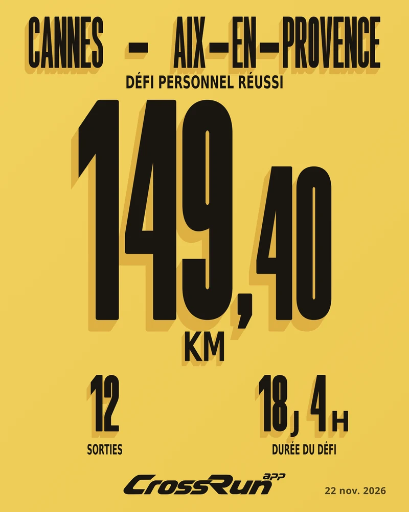

Expédition perso
Ton défi,
sortie après sortie.
Choisis les deux villes de ton expédition et donne-toi 30 jours maximum pour les relier. Chaque sortie près de chez toi fait avancer ton avatar. Ne lâche rien !
Sur les 190 km de Cannes à Marseille, tu as déjà parcouru 14 % du trajet. Ton avatar indique où tes sorties t’ont amené sur cette carte virtuelle.

Ton défi réussi.
Une fois arrivé, tu peux partager le bilan de ton expédition. Sur cet exemple entre Cannes et Aix-en-Provence, les 149,40 km représentent 12 sorties en 18 jours et 4 heures.
